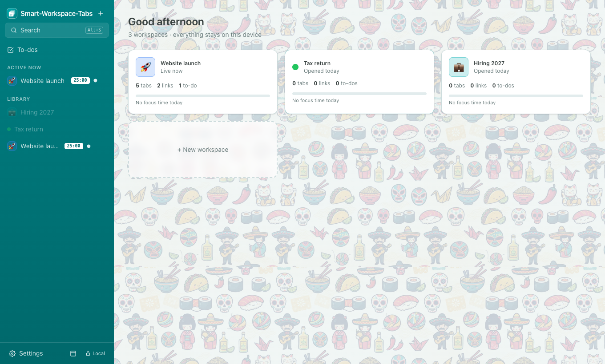

Every project deserves its own focused workspace.
Organize your tabs into fast, isolated workspaces with saved links, notes, and tasks. Free memory with native tab sleeping, clean up duplicate tabs, and never lose your context again. Everything stays safely on your machine.

0 KB
Data sent to external servers
~0.5 s
Debounced background autosave
Up to 80%
RAM saved with native tab sleeping
1-Click
Chrome Tab Groups to Workspaces
Built for builders, researchers, and multitaskers
No more lost research or browser slowdowns. Smart-Workspace-Tabs gives you full control over your tabs and windows.
Seamless Workspaces
Switch between projects inside the same window. The current workspace saves and closes its tabs, while the next workspace restores in place—including pinned tabs, groups, and tab order.
Clean Up Duplicates
Detect and close duplicate tabs across your workspace or all open windows. Compare exact URLs or ignore session tokens and query parameters, previewing which tab stays before closing.
Domain Views
Follow a single site (like github.com or notion.so) across all tabs, including
subdomains. Bulk actions allow you to focus, save as resources, or clean up duplicates in one tap.
Quick Search (Alt+S)
Fuzzy search across active tabs, saved tabs from closed workspaces, resources, tasks, and browsing history. Press Enter to jump straight to what you need, switching workspaces automatically.
Focus Sessions
Time-box your workspace with 15, 25, or 50-minute sessions. Timers stay visible in the header and sidebar, other workspaces dim, and local notifications let you know when time is up.
Tab Sleeping & Memory Saver
Reclaim gigabytes of RAM. Discard inactive background tabs automatically while keeping audio, pinned tabs, and custom whitelisted domains awake. Restored tabs sleep until clicked.
Convert Chrome Tab Groups into Workspaces
Already using Chrome Tab Groups? Don't start from scratch. Smart-Workspace-Tabs detects your open groups and converts them with a single click.
- Preserves group name, color badge, and all internal tabs.
- Ungrouped tabs remain unaffected in your active window.
- Workspaces can be organized into custom folders and reordered.

Clean Duplicates Without Losing Progress
Ever open the same Jira ticket, pull request, or document four times? Our duplicate cleaner safely deduplicates tabs with smart previewing.
- Exact Match: Compares identical URLs across one workspace or all windows.
- Smart Strip: Matches pages ignoring tracking tokens, query strings, and URL fragments.
- Never closes the pinned or currently active tab by mistake.

Time-Box Your Day with Focus Sessions
Stay locked in on a single task. Choose your interval, start the timer, and let Smart-Workspace-Tabs protect your attention from multitasking.
- Dimmed peripheral workspaces in sidebar keep your mind on the task.
- Confirmation dialog guards against accidentally navigating away.
- Logs daily focus minutes per workspace stored locally for your review.

Designed for clarity and speed
Explore the interface designed with the elegant Grupo Ōkami teal palette, complete with dark mode and custom backgrounds.


How it works under the hood
Clever architecture that respects your browser and protects your workflow.
First Run Safety
On initial install, every open window is automatically snapshotted into its own initial workspace. Not a single tab or session is lost or closed.
Single-Window Swapping
When you switch workspaces, the current window snapshots its tabs, closes them, and smoothly reconstitutes the next workspace's tabs without flickering.
100% Data Sovereignty
All state lives in your browser's IndexedDB. Automatic backups export versioned JSON files straight to your local Downloads folder on your schedule.
Install Smart-Workspace-Tabs
Available for Google Chrome and Chromium browsers (Brave, Edge, Arc, Vivaldi).
Chrome Web Store
Install in one click directly from the official Chrome Web Store. Fast, automatic updates with zero setup required.
Add to Chrome — FreeReady for a faster, organized Chrome experience?
Stop getting lost in dozens of open tabs. Group by project, save memory, and protect your privacy.